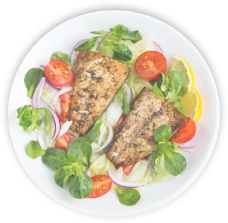
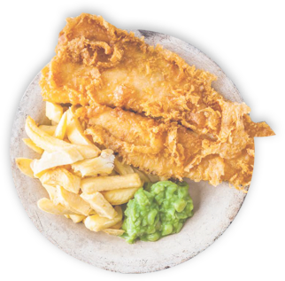

דניס בעגבניות ובצל
דניס בעגבניות ובצל
רכיבים
-
2 דגי דניס שלמים ונקיים (סה"כ 1 ק"ג)
-
3 כפות שמן זית
-
4-5 שיני שום פרוסות/קצוצות
-
4 כפות מיץ לימון
-
כפית תבלין כוסברה ופטרוזיליה (ניתן להשתמש גם בעלים טריים קצוצים דק)
-
כפית שטוחה פפריקה מתוקה
-
חצי כפית מלח, פלפל שחור לפי הטעם
הוראות הכנה
חותכים את הדג לאורכו ובעזרת סכין חורצים את בשר הדג לעומק משני הצדדים (כ-3 חתכים מכל צד, בחלקו החיצוני).
מערבבים את כל החומרים בקערית ומתבלים את הדג מבחוץ, מבפנים ובין החריצים.
מניחים את הדגים בתבנית ומכניסים לתנור שחומם מראש ל- 190 מעלות במשך 25-30 דקות
(ב-5 דקות האחרונות ניתן להגביר את חום התנור לחום גבוה מאוד כדי להשחים את הדגים).
אולי תאהב גם …
-

פילה דניס ומרווה
הטעם היחודי של הדניס שלנו בשילוב עם עדינות המרווה בצל סגול ועגבניות בשלות טעם עדין יחודי ובלתי נשכח מנה מרעננת וקיצית
-

דניס בעגבניות ובצל
מנת דניס פיקנטית עם זיתים וטעם עשירשל דג אמיתי היישר מהחווה שלנו עם נגיעות עגבניה עוקצניות וגם מעט אניסללקק את האצבעות
-

דניס מטוגן בפנקו
מנת דג טעימה וקלילהשל השף ישראל אהרונידניס טרי עם פרורי פנקו פרכיםמנה שילדים אוהבים במיוחד